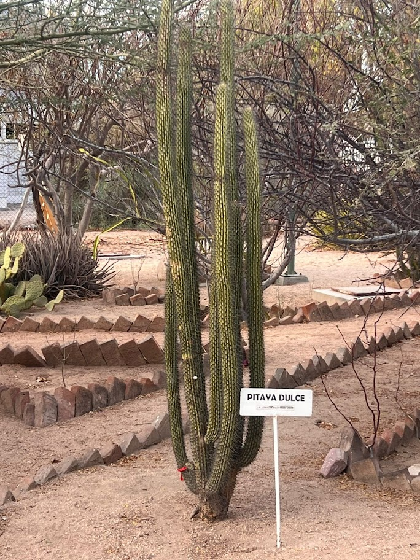
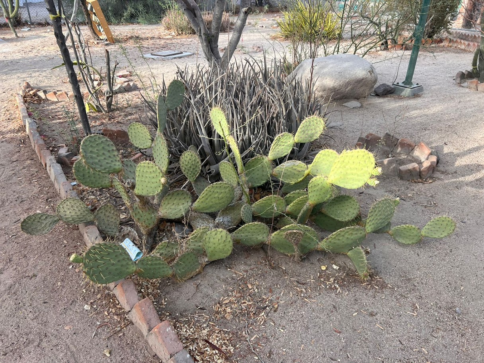
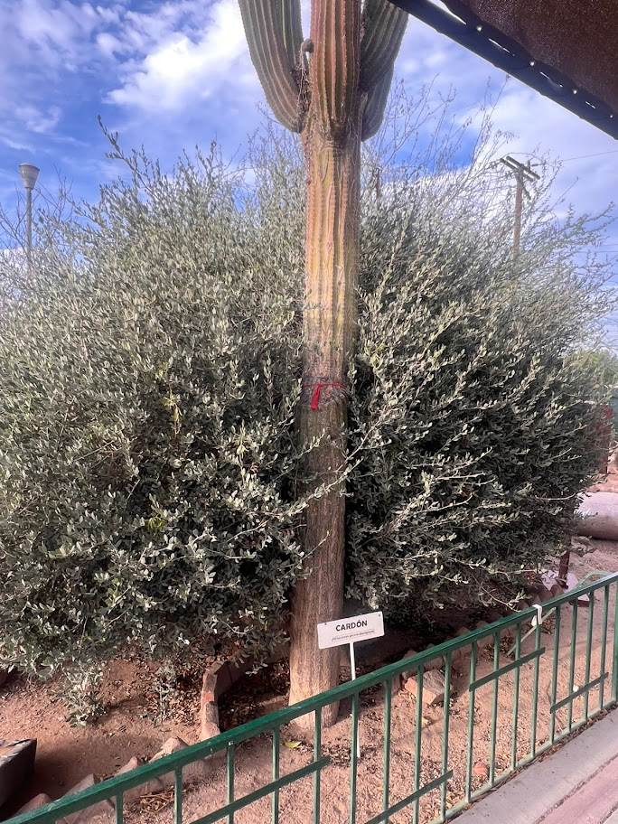
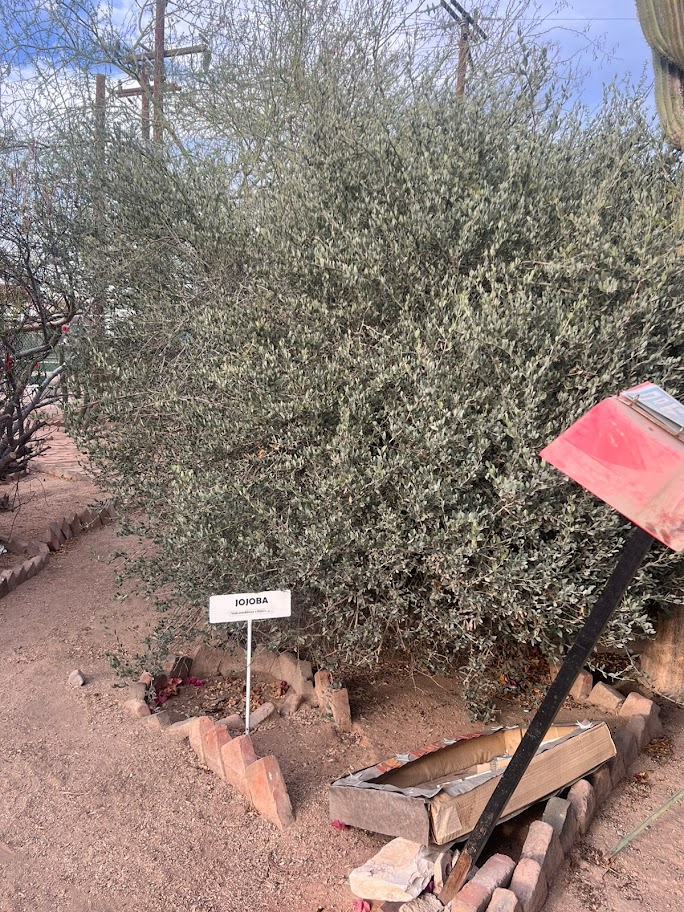
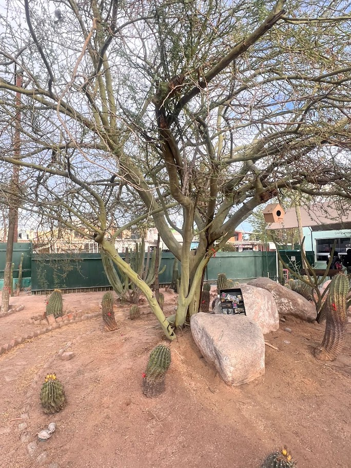
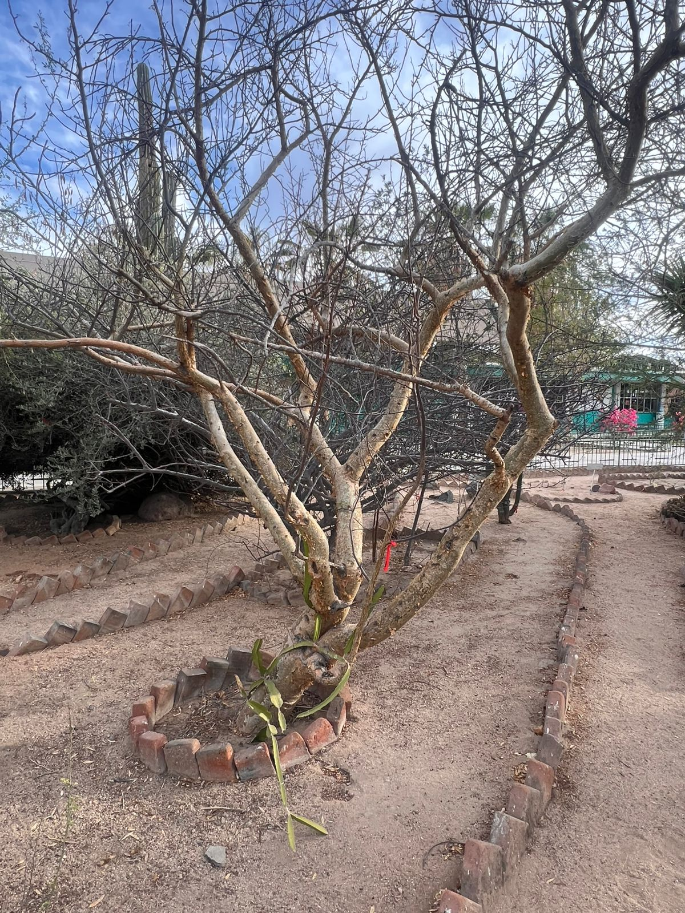
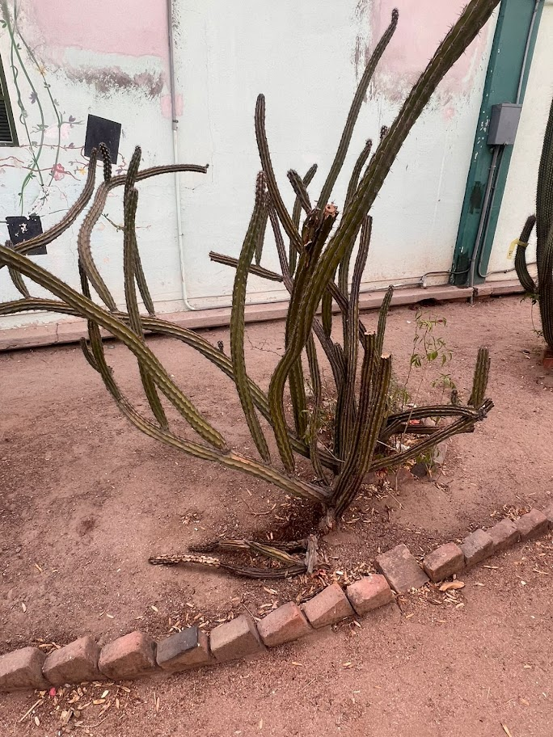
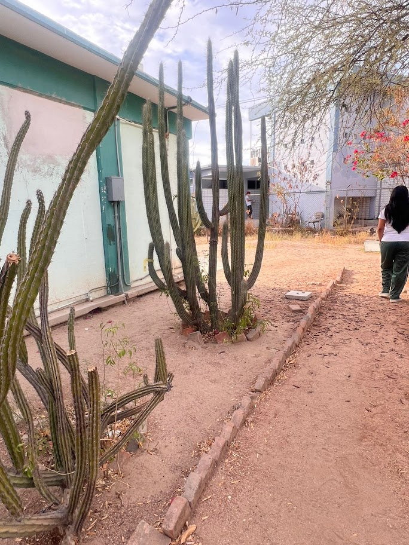

Jardín Botánico
En nuestra escuela contamos con un hermoso jardín botánico, un espacio creado para aprender, convivir y cuidar la naturaleza.

La Pitaya dulce es una fruta tropical muy apreciada por su sabor refrescante y sus beneficios para la salud. Crece en una planta tipo cactus y se caracteriza por su cáscara colorida y su pulpa, que puede ser blanca, roja o rosada con pequeñas semillas negras.

El Nopal es una planta muy importante en la cultura y la alimentación de México. Pertenece a la familia de los cactus y se caracteriza por sus pencas verdes y espinas. Es una planta resistente que puede crecer en zonas secas y con poca agua.

El cardón es una planta suculenta, columnar arborescente, con ramas ascendentes que puede llegar a medir hasta 19 m de alto. Generalmente crece en grupos llamados “cardonales”. La flor es de color blanco-amarillento con líneas de color rosa o púrpura.

El árbol de jojoba es un arbusto perenne originario del desierto de Sonora. Famoso por su longevidad (más de 100 años), es conocido mundialmente porque de sus semillas se extrae el "aceite de jojoba", una cera líquida dorada muy valorada en cosmética

El árbol palo verde es una especie nativa de zonas áridas de América, famosa por su corteza y ramas de color verde que realizan la fotosíntesis. Es ideal para jardines debido a su espectacular floración amarilla y su alta resistencia a la sequía.

El árbol de palo blanco es nativo de México y zonas áridas, muy valorado por su madera resistente, uso ornamental, y propiedades medicinales tradicionales. Sirve para construir cabos de herramientas y muebles artesanales.

El cactus pulpo es una especie de cactus nativa de México, caracterizada por sus tallos largos que se arquean y enraízan, formando nuevas colonias. Es conocido por ser vivíparo y tener un estado de conservación vulnerable.

Stenocereus es un género de cactus nativos de México y regiones áridas de América, conocidos por producir frutos comestibles llamados pitayas. Son plantas de gran tamaño que se utilizan en medicina popular y son valoradas por sus frutos rojos, púrpuras o amarillos.

El copal blanco es un árbol originario de Mesoamérica, famoso por su resina aromática. Mide entre 4 y 15 metros de altura y es muy común en selvas bajas de estados mexicanos como Oaxaca, Michoacán y Guerrero.